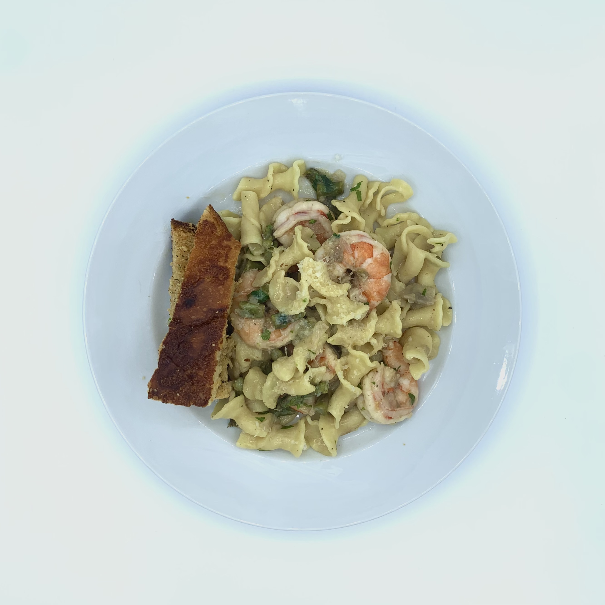

Chef Abe's Recipes
Click Photo to View Recipe |
Name |
Description |
Nutrition/Serving (Cals/Fat/Protein/Carbs) |
|
Pear, Apple, & Brie galette |
Scratch-made pastry dough enveloping sweet-spiced apples and pears and nutty melted brie. A perfect centerpiece for cocktail parties and proper tea, this classic French pie alternative provides maximum flakiness & flavor with much less effort. |
255/16g/5g/24g |
|
Classic Sourdough Loaf |
This simple combination of flour, water, and salt is the foundation for limitless creativity. Perfectly paired with almost any region's cuisine, this sourdough loaf is easier to digest than loaves produced with commercial yeast. |
191/0g/8g/42g |
|
Scallop Crudo |
The perfectly balanced seafood Hors d'Oeuvres, raw scallop with a clean, spicy finish. Thin sliced scallops nestled atop hothouse cucumber with a paper-thin lemon slice for citrus and a dot of sriracha for kick. |
62/1g/10g/4g |
 |
Challah Bread |
The traditional bread of the Jewish Sabbath, generations of bakers around the world have labored over dough recipes & braiding techniques. Made to mark the significance of Shabbat, this egg-laden bread is carefully kneaded, rolled, and plaited to perfection. |
169/5g/6g/24g |
 |
Spicy Creole Shrimp Soup |
The Bayou's Holy Trinity of bell pepper, celery, and onion lays the foundation for this spicy-but-balanced tomato based broth. Plump Gulf shrimp star in this comforting homage to Louisiana, warming your body and soul. |
343/18g/30g/20g |
|
Ahi Tuna Stack |
Sticky-sweet sushi rice, pickled shaved cucumber & shallot, ahi tuna tossed in sesame oil, green onions, soy sauce, and wasabi topped with thinly sliced avocado and spicy chili sauce. This tuna stack lands right in the middle of gourmet appetizer and deconstructed sushi roll. |
479/15g/32g/53g |
|
Wine Braised Short Ribs |
Sumptious short ribs prepared with a combination of traditional braising and contemporary sous vide techniques. A rich red wine based braising liquid imparts endless flavor during a 30 hour slow simmer. |
886/62g/54g/10g |
|
Israeli Salad |
Well known across the mediterranean, this lettuce-free salad combines the diverse textures of Persian cucumbers, bell peppers, beefsteak tomatoes & red onion with the bustling flavors of sumac, za'atar, parsley, mint, fresh lemon, & smooth olive oil, topped with creamy sheep's feta. |
129/6g/5g/18g |
|
Steakhouse Burgers |
Recreate your favorite gourmet burger with this ground-filet based patty topped with spicy onion jam and a melted slice of Tilamook extra-sharp cheddar all between a homemade toasted sesame seed bun. |
783/46g/39g/51g |
 |
Port Soy Centercut Filet Roast |
Perfectly medium-rare from edge to edge, the modern marvel of sous vide makes Chateaubriand approachable for even the novice home cook. Carefully trimmed, seared, braised, and roasted, this lean beef dish is infused with port wine & soy sauce and finishes butter-knife tender. |
280/12g/32g/4g |
 |
Sesame Seed Buns |
Fluffy brioche-style burger buns, hearty enough for a thick patty but light enough to complement without overpowering. Take your sandwich to the next level. |
240/7g/5g/38g |
 |
Two-Stock Pork Belly Ramen |
Two homemade stocks combine with the tantalizing spice of fried chili oil and the rich umami of bonito flakes for the utlimate at-home ramen experience. |
897/45g/27g/83g |
 |
Crispy Za'atar Chicken Thighs |
This afforadable recipe may be short on cost, but this dish is full of Mediterranean flavors. Roasted chicken with a crispy, herb crusted skin, perfect for family weeknight dinners or with a bottle of Pinot Grigio on the weekend. |
429/32g/33g/0g |
 |
Picanha, Tostones, & Baby Bok Choy |
The prized cut of Brazil, Picanha, tenderized in a marinade that reflects the diverse cultural heritage of the South American nation and served with crispy tostones and a savory baby bok choy. |
429/32g/33g/0g |
|  |
Californian Trottole |
The flavors of coastal and inland California collide in a trottole pasta dish bursting with flavor. Large Mexican wild shrimp, artichokes marinated in oil, asparagus, and aged cheese covered in a buttery wine sauce. |
338/12g/18g/33g |